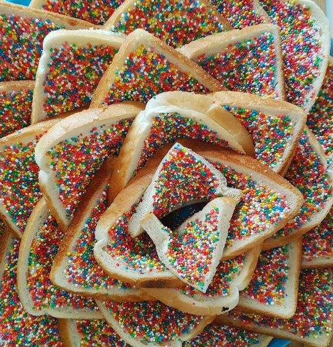

Fairy Bread

Discription
Fairy bread is a classic dish in the land down under. It is quick, easy, and cheap to make yet an aussie delicacy that is guaranteed to please crowds both young and old.
ingredients
- 2 slices of soft white bread (or more if doing a crowd).
- 1 block softend butter
- 1 bag or jar of 100s and 1000s
Steps
- Apply a generous amount of butter to your white bread making sure to cover to the edges.
- Sprinkle your 100s and 1000s untill you can no longer see the butter. alternativly you can tip them onto a plate and place the bread butter side down to coat it in them.
- Tilt bread up to unsure lose 100s and 1000s are removed. (this is only nesessary if serving to others.)
- Place fairy bread onto plate or platter to serve.
- Enjoy!
Home